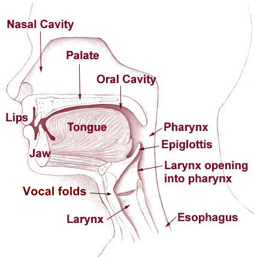
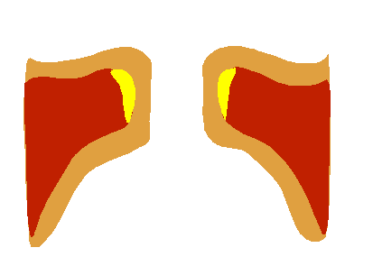

Physiological speech production
Contents
conda install -c conda-forge jupyter_contrib_nbextensions # Speech production and acoustic properties
2.2. Physiological speech production¶
2.2.1. Overview¶
When a person has the urge or intention to speak, her or his brain forms a sentence with the intended meaning and maps the sequence of words into physiological movements required to produce the corresponding sequence of speech sounds. The neural part of speech production is not discussed further here.
The physical activity begins by contracting the lungs, pushing out air from the lungs, through the throat, oral and nasal cavities. Airflow in itself is not audible as a sound - sound is an oscillation in air pressure. To obtain a sound, we therefore need to obstruct airflow to obtain an oscillation or turbulence. Oscillations are primarily produced when the vocal folds are tensioned appropriately. This produces voiced sounds and is perhaps the most characteristic property of speech signals. Oscillations can also be produced by other parts of the speech production organs, such as letting the tongue oscillate against the teeth in a rolling /r/, or by letting the uvula oscillate in the airflow, known as the uvular trill (viz. something like a guttural /r/). Such trills, both with the tongue and the uvula, should however not be confused with voiced sounds, which are always generated by oscillations in the vocal folds. Sounds without oscillations in the vocal folds are known as unvoiced sounds.
Most typical unvoiced sounds are caused by turbulences produced by static constrictions of airflow in any part of the air spaces above the vocal folds (viz. larynx, pharynx and oral or nasal cavities). For example, by letting the tongue rest close to the teeth, we obtain the consonant /s/, and by stopping and releasing airflow by closing and opening the lips, we obtain the consonant /p/. A further particular class of phonemes are nasal consonants, where airflow through the mouth is stopped entirely or partially, such that a majority of the air flows through the nose.
2.2.2. The vocal folds¶
The vocal folds, also known as vocal cords, are located in the throat and oscillate to produce voiced sounds. The opening between the vocal folds (the empty space between the vocal folds) is known as the glottis. Correspondingly, the airspace between the vocal folds and the lungs is known as the subglottal area.
When the pressure below the glottis, known as the subglottal pressure increases, it pushes open the vocal folds. When open, air rushes through the vocal folds. The return movement, again closing the vocal folds is mainly caused by the Venturi effect, which causes a drop in air pressure between the vocal folds when air is flowing through them. As the vocal folds are closing, they will eventually clash together. This sudden stop of airflow is the largest acoustic event in the vocal folds and is known as the glottal excitation.
In terms of airflow, the effect is that during the closed phase (when the vocal folds are closed), there is no airflow. At the beginning of the open phase (when the vocal fold are open), air starts to flow through the glottis and obviously, with the closing of the vocal folds also air flow is decreasing. However, due to the momentum of air itself, the movement of air occurs slightly after the vocal folds. In other words, there is a phase-difference between vocal folds movement and glottal airflow waveform.
The frequency of vocal folds oscillation is dependent on three main components; amount of lengthwise tension in the vocal folds, pressure differential above and below the vocal folds, as well as length and mass of the vocal folds. Pressure and tension can be intentionally changed to cause a change in frequency. The length and mass of the vocal folds are in turn correlated with overall body size of the speaker, which explains the fact that children and females have on average a higher pitch than male speakers.
Note that the frequency of the vocal folds refers to the actual physical phenomenon, whereas pitch refers to the perception of frequency. There are many cases where these two may differ, for example, resonances in the vocal tract can emphasise harmonics of the fundamental frequency such that the harmonics are louder than the fundamental, and such that we perceive one of the harmonics as the fundamental. The perceived pitch is then the frequency of the harmonic instead of the fundamental.
2.2.3. The vocal tract¶
The vocal tract, including the larynx, pharynx and oral cavities, have a great effect on the timbre of the sound. Namely, the shape of the vocal tract determines the resonances and anti-resonances of the acoustic space, which boost and attenuate different frequencies of the sound. The shape is determined by a multitude of components, in particular by the position of the jaw, lips and tongue. The resonances are easily modified by the speaker and perceived by the listener, and they can thus be used in communication to convey information. Specifically, the acoustic features which differentiate vowels from each other are the frequencies of the resonances in the vocal tract, corresponding to specific places of articulation primarily in terms of tongue position. Since the air can flow relatively unobstructed, vowel sounds tend to have high energy and loudness compared to consonants.
In consonant sounds, there is a partial or full obstruction at some part of the vocal tract. For instance, fricative consonants are characterized by a narrow gap between the tongue and front/top of the mouth, leading to hiss-like turbulent air flow. In plosives, the airflow in the vocal tract is fully temporarily obstructed. As an example, bilabial plosives are characterized by temporary closure of the lips, which leads to accumulation of air pressure in the vocal tract due to sustained lung pressure. When the lips are opened, the accumulated air is released together with a short burst sound (plosion) that has impulse- and noise-like characteristics. Similarly to vowels, the place of the obstruction in the mouth (i.e., place of articulation) will affect the acoustic characteristics of the consonant sound by modifying the acoustic characteristics of the vocal tract. In addition, manner of articulation is used to characterize different consonant sounds, as there are several ways to produce speech while the position of the primary obstruction can remain the same (e.g., short taps and flaps, repeated trills, or already mentioned narrow constrictions for fricatives).
In terms of vocal tract shape, a special class of consonants are the nasals, which are produced with velum (a soft structure at the back top of the oral cavity) open, thereby allowing air to flow to the nasal cavity. When the velum is open, the vocal tract can be viewed as a shared tube from the larynx to the back of the mouth, after which the tract is divided into two parallel branches consisting of the oral and nasal cavities. Coupling of the nasal cavity to the vocal tract has a pronounced impact on the resonances and anti-resonance of the tract. This is commonly perceived as nasalization of speech sounds by listeners.
Side-view of the speech production organs.


By BruceBlaus. When using this image in external sources it can be cited as:Blausen.com staff (2014). “Medical gallery of Blausen Medical 2014”. WikiJournal of Medicine 1 (2). DOI:10.15347/wjm/2014.010. ISSN 2002-4436. - Own work, CC BY 3.0, https://commons.wikimedia.org/w/index.php?curid=29294598
Vocal folds as seen from above.
.jpg)
The motion of vocal folds seen from the front (or back).

Organs in the mouth.

The four images above are from Wikipedia.
2.3. Acoustic properties of speech signals¶
The most important acoustic features of a speech signal are (roughly speaking)
The resonance of the vocal tract, especially the two lowest resonances, known as the formants F1 and F2 (see figure below). The resonance structure can be easily examined by drawing an “envelope” above the spectrum, that is, to draw a smooth line which goes just above the spectrum, as seen on the figure below. We thus obtain the spectral envelope, which characterizes the macro-shape of the spectrum of a speech signal, and which is often used to model speech signals.
The fundamental frequency of a speech signal or its absence carries a lot of information. Per definition, voiced and unvoiced phonemes, respectively, are those with or without an oscillation in the vocal folds. Due to its prominence, we categorize phonemes according to whether they are voiced or unvoiced.
The airflow which passes through the oscillating vocal folds will generally have a waveform which resembles a half-wave rectified sinusoid. That is, airflow is zero when the vocal folds are closed (closed phase) and during the open time (open phase) the waveform resembles (somewhat) the shape of the upper part of a sinusoid. The spectrum of this waveform will therefore have the structure of a harmonic signal, that is, the spectrum will have peaks at the fundamental frequency and its integer multiples (see figure below).
In most languages, pitch does not differentiate between phonemes. However, in languages that are known as tonal languages, the shape of the pitch contour over time does bear semantic meaning (see Wikipedia:Tone (linguistics) for a nice sound sample). Pitch contours are however often used to encode emphasis in a sentence. Roughly speaking, exerting more physical effort on a phoneme raises its pitch and intensity, and that is usually interpreted as emphasis, that is, the word (or phoneme) with emphasis is more important than other words (or phonemes) in a sentence.Signal amplitude or intensity over time is another important characteristic and in its most crude form can be the difference between speech and silence (see also Voice activity detection (VAD)). Furthermore, there are phonemes characterized by their temporal structure; in particular, stop and plosive-consonants, where airflow is stopped and subsequently released (e.g. /p/, /t/ and /k/). While the stop-part is not prominently audible, it is the contrast of a silence before a burst of energy which characterizes these consonants.
The spectrum of a speech segment annotated with its formants \(F_k\) (for \( k\geq 1 \) ) as well as the fundamental frequency \(F_0\) and
its integer multiples \(kF_0\). Note that it is not always clear
where the formants are; here formants F4 and F5 are not prominent and
therefore difficult to
locate.

The waveform of a sentence of speech, illustrating variations in amplitude and intensity.

2.4. Physiological modelling¶
2.4.1. Vocal tract¶
Vowels are central to spoken communication, and vowels are determined by the shape of the vocal tract. Modelling the vocal tract is therefore of particular interest.
2.4.1.1. Simple models¶
The vocal tract is essentially a tube of varying length. It has a 90-degree bend, where the throat turns into the mouth, but the acoustic effect of that bend is minor and can be ignored in simple models. The tube has two pathways, through the oral and nasal cavities. The acoustic effect of the oral cavity dominates the output signal such that, roughly speaking, the oral cavity generates resonances to the output sound, while the nasal cavities contributes mainly anti-resonances (dips or valleys) to the spectral envelope. Presence of energy is perceptually more important than absence of energy and anti-resonances can therefore be ignored in simple models.
A very simple model is thus a straight cylindrical tube sub-divided into constant radius segments of equal length (see illustration below). If we further assume that the tube-segments are lossless, then this tube is analytically equivalent with a linear predictor. This is a fantastic simplification in the sense that from a physiologically motivated model we obtain a analytically reasonable model whose parameters we can readily estimate from observed signals. In fact, the temporal correlation of speech signals can be very efficiently modelled with linear predictors. It offers a very attractive connection between physiological and signal modelling. Unfortunately, it is not entirely accurate.
Though speech signals are very efficiently modelled by linear predictors, and linear predictors are analytically equivalent with tube-models, linear predictors estimated from sound signals need not correspond to the tube which generated the sound. The mismatch in the shape of estimated and real tubes is due to two primary reasons;
Estimation of linear predictive coefficients assumes that the excitation, viz. the glottal excitation, is uncorrelated (white noise). This is certainly an incorrect assumption. Though the periodic structure of the glottal excitation does not much bias linear predictors, glottal excitations are also dominated by low-frequency components which will bias the linear predictor. The linear predictor cannot make a distinction between features of the glottal excitation and contributions of the vocal tract, but model both indiscriminately. We also do not know the precise contribution of the glottal excitation such that it is hard to compensate for it.
The analytical relationship between coefficients of the linear predictor and the radii of the tube-model segments is highly non-linear and sensitive to estimation errors. Small errors in predictor parameters can have large consequences in the shape of the tube model.
Still, since linear predictors are efficient for modelling speech, they are useful in speech modelling even if the connection to tube-modelling is sensitive to errors. Linear prediction is particularly attractive because it gives computationally efficient algorithms.
2.4.1.2. Advanced models¶
When more accurate modelling of the vocal tract is required, we have to re-evaluate our assumptions. With digital waveguides we can readily formulate models which incorporate a second pathway corresponding to the nasal tract. A starting point for such models is linear prediction, written as a delay-line with reflections corresponding to the interfaces between tube-segments. The nasal tract can then be introduced by adding a second delay line. Such models are computationally efficient in synthesis of sounds, but estimating their parameters from real sounds can be difficult.
Stepping up the accuracy, we then already go into full-blown physical modelling such as finite-element methods (FEM). Here, for example, the air-volume of the vocal tract can be split into small interacting elements governed by fluid dynamics. The more dense the mesh of the elements is, the more accurately the model corresponds to physical reality. Measuring and modelling the vocal tract with this method is involved and an art form of its own.

Illustration of a vocal-tract tube-model consisting of piece-wise constant-radius tube-segments.
2.4.2. Glottal activity¶
As characterization of the glottal flow, we define events of a single glottal period as follows (illustrated in the figure below):
Opening and closing time (or instant), are the points in time where respectively, glottal folds open and close, and where glottal flow starts and ends.
Open and closed phase, are the periods during which the glottis is open and closed, respectively.
The length of time when glottis is open and closed are, respectively, known as open time (OT) and closed time (CT). Consequently, the period length is \(T=OT+CT\).
Opening and closing phases are the portions of the open phase, when the glottis is opening and closing, respectively.
The steepness of the closing phase is related to the “agressiveness” of the pulse, that is, it relates to the tension of glottal folds and is characterized by the (negative) peak of the glottal flow derivative.
All parameters describing a length in time are often further normalized by the period length \(t\).
Like modelling of the vocal tract, also in modelling glottal activity, there is a range of models of different complexity:
Maximum-phase linear prediction; The most significant event in a single glottal flow pulse is its closing instant; the preceding waveform is smooth but the closing event is abrupt. The waveform can thus be interpreted as the impulse response of an IIR filter but turned backwards, which also known as the impulse response of a maximum-phase linear predictor (the figure on the right was generated with this method). The beauty of this method is that it is similar to vocal tract modelling with linear prediction, such that we are already familiar with the method and computational complexity is simple. Observe, however, that maximum-phase filters are by definition unstable (not realizable), but we have to always process the signal backwards, which complicates systems design.
The Liljencrantz-Fant (LF) -model is a classical model of the glottal flow, the original form of which is a function of four parameters (defined in article). It is very useful and influential because it parametrizes the flow with a low number of easily understandable parameters. The compromise is that the parameters are not easily estimated from real signals and that it is based on anecdotal evidence of glottal flow shapes and if it were presented today, to be widely accepted, we would require more evidence to support it.
Mass-spring systems; the opposing glottal folds can be modelled as simple point-masses connected with damped springs to fixed points. When subjected to the Venturi-forces generated by the airflow, these masses can be brought to oscillate like the vocal folds. Such models are attractive because, again, their parameters have physical interpretations, but since their parameters are difficult to estimate from real-world data and they oscillate only a limited range of the parameters, their usefulness in practical applications is limited.
Finite-element methods (FEM) are again the ultimate method for accurate analysis, suitable for example in medical analysis, yet the computational complexity is prohibitively large for consumer applications.

Illustration of a glottal flow pulse, its derivative and a sequence of glottal flow pulses (corresponding sound below).
from IPython.display import *
Audio("attachments/175513696.wav", autoplay=False)
2.4.3. Lip radiation¶
Having travelled through the vocal tract, air exits primarily through the mouth and in some extent through the nose. In leaving this tube, it enters the free field where airflow in has little effect. Recall that sounds are, instead, variations in air pressure. At the transition from the tube to the free field, variations in air flow become variations in air pressure.
The physics of this phenomenon are governed by fluid dynamics, an advanced topic, but heuristically we can imagine that variations air pressure is related to variations in airflow. Thus if we take the derivative of the airflow, we get an approximation of its effect on air pressure $\( sound(t) \approx \frac d{dt} flow(t), \)\( where \)t$ is time.
Often we deal with signals sampled at time indices \(n\), where the derivative can be further approximated by the first difference $\( sound(n) \approx g \left[flow(n) - flow(n-1)\right], \)\( where \)g>0$ is a scalar gain coefficient.